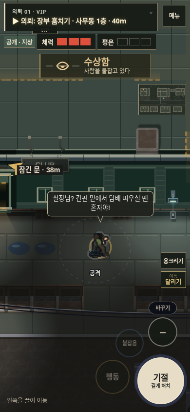
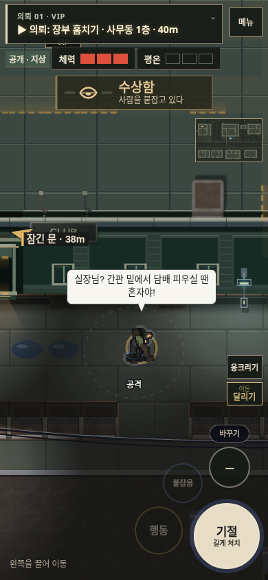

이전

수정

이전 · v125
수정 · v126
이전 · v125
수정 · v126
이전 · v125
수정 · v126
위 짧은 비교는 실제 행동 처리와 렌더러를 사용했습니다. 같은 시작 위치를 맞추고 NPC를 제외해 자세를 확인했습니다.
약국 → 식당 준비 → 화장실 제압·변장 → 사무동 → 2층 비밀번호 → 장부 → 전화 유인 → 사물함 매복 → 표적 제압 → 서쪽 탈출. 맵을 아는 자동 입력 경로로 진행한 실제 프레임 루프 녹화입니다. 순간이동·체력·물품 지급을 사용하지 않았습니다. 캔버스 녹화여서 HTML HUD는 위 비교 영상과 구분됩니다. 사람의 첫 플레이 평가나 실제 휴대폰 성능 검증은 아닙니다.